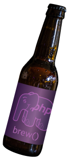
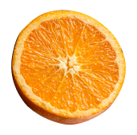
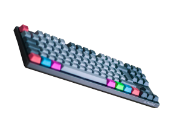
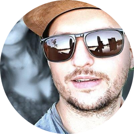
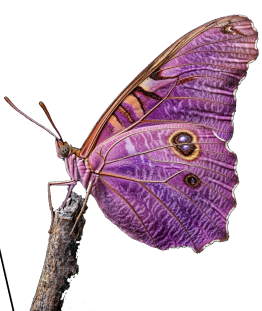
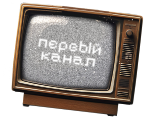

Подавляющее большинство PHP 8+. Это неплохо, ведь по безопасности уже не рекомендуется использовать версии PHP ниже 8.1
Итоги опроса в русскоязычном PHP-комьюнити
2024
В этом году ежегодный опрос среди представителей русскоязычного сообщества PHP-разработчиков провели ребята из CutCode
Традиционно задавались вопросы про версии PHP, рабочие инструменты, ИИ, предпочтения сообщества в чтении, видео и не только.
Ваш пол?
96,9%
Мужчины
3,1%
Женщины
Основное количество
PHP-разработчиков находятся
в “самом расцвете сил”
PHP-разработчиков находятся
в “самом расцвете сил”
Ваш возраст?

и ещё
70
стран
В какой стране находитесь?
Оцените свой уровень в 2024 году
ориентируемся на свои ощущения в компании и примерную зарплату
Стал
Остался
Сравни с:
Чем еще увлекаетесь кроме разработки?
  Апельсинами
Пивоварение
Страйкбол
Клавиатауры
Китайские чаи
Как долго вы используете PHP?
более
80%
используют
PHP дольше 4 лет
1,6%
меньше года
меньше года
4,2%
1—2 года
1—2 года
12,3%
2—4 года
2—4 года
46,2%
10+ лет
10+ лет
35,6%
Более 4 лет
Более 4 лет
Какая версия PHP используется в вашей команде?

В 2024 году каким был ваш основной язык разработки?
Dart
C++
C#
YAML
Pascal
C
98.3%
PHP
PHP
2,6% – Go
2,6% – JavaScript
1,2% – Python
Как ни странно, PHP обошел конкурентов в этом вопросеЯзыки, на которых вы писали в 2024, кроме основного языка?
Какой PHP-фреймворк вы используете на работе?
В 2024 Laravel обогнал Symfony! А в 2022 и 2023 было наоборот
Сравни с:
Какой PHP-фреймворк вы используете вне работы?
8.4%Не пишу на PHP вне работы
14.4%Вне работы я отдыхаю
Сравни с:
Выберите релиз года
MoonShine 3
Врыв Димы на стрим
Лучше бы ничего этого не было
Дюна 2
Пишете асинхронный код на PHP?
Использует не много, треть отрицает это направление, а большинство еще не использует асинхронность, но хотела бы изучить.
Swoole👀
Ничего не думаю) Ну разве что не понмаю где тут свул в результатах. И не понимаю накой хрен асинк в пыхе эти люди используют, т.к. задач для него в предметной области языка, при классическом использовании просто нет)))
@SerafimArts
CMS которые используете в работе?
Встречайте - победителя 2024 Bitrix! Несмотря ни на что, битрикс каждый год самая популярная CMS.
Надо звать на PHP Russia 2025?!
Ого, очень интересно было бы узнать, на чем написаны эти самописные CMS. Остальная часть вроде совпадает с моими представлениями... Ну может WordPress я думал повыше будет…
@samdark
Какие фреймворки регулярно используете для тестирования?
PHPUnit лидирует несмотря на хайповость PEST.
Есть немало людей, которые не пользуются тестами
В качестве сервера/раннера на ваших проектах используется?
Подавляющее большинство использует Nginx/Angie + PHP-FPM.
Но процент Roadrunner/Swoole/FrankenPHP растёт!
Все подросли — все молодцы. Особенно молодец Franken, который победил "Не знаю".
@roxblnfk
Какие дополнительные инструменты контроля качества вы используете?
А кому-то достаточно PhpStorm
Какие инструменты профилирования и измерения производительности вы используете?
Как заботитесь об Observability системы?
Несмотря на уход, большинство ответов – экосистема JB (PhpStrom + Laravel Idea)
Какие платные инструменты и сервисы вы используете/использовали в своей работе
IDE, сервисы, облачные решения, плагины и т.д.? Чего не хватает?
Архитектура рабочего проекта
50.6%
Монолит + микросервисы
Монолит + микросервисы
36.6%
Монолит
Монолит
8% – Микросервисы
разное
Кажется, популярность микросервисов падает, и разработчики находят баланс между двумя крайностями. В конце концов, главная задача — не получить копролит!
@vudaltsov
Тут PhpStorm вне конкуренции.
Отечественные аналоги используют пока меньше 1% опрошенных.
В чем пишете код?
Используете нейросети?
Прошлый год
25.6%
Поигрался, пока не зашло
23.1%
Периодически использую
20.9%
Не пробовал, но собираюсь
16.7%
Не собираюсь использовать
12.7%
Активно использую

Я, как давний любитель и постоянный пользователь нейросетей, убеждён, что раньше ключевым навыком было умение "гуглить", а теперь одним из самых важных становится "промпт-инжиниринг".
Думаю, что нам стоит окружить себя нейроджунами и передавать им максимум рутины — а самим чаще собираться за бокалом пива! Очень радует видеть, что наше сообщество шагает в ногу со временем.
@butschster
Какую нейросеть используете?
ChatGPT вне конкуренции
Open Source LLama и Gemma, а также Gigachat и YandexGPT особо не пользуются популярностью и набрали по несколько голосов.
Какие Телеграм-каналы читаете регулярно?
 
Всё это ерунда на палке
Профильные Битрикса
Регулярно не смотрю
В этом году вы регулярно смотрели видео-контент на каналах…
Какие аспекты PHP вы бы хотели изучить глубже?
C PHP
всё ясно
всё ясно
🖼️
Выходящие за рамки Битрикс ) но раз я их не использую, то не знаю, что там есть
Выходящие за рамки Битрикс ) но раз я их не использую, то не знаю, что там есть
🛸
Все что не изучено
Все что не изучено
⏸️
Параллельность
Параллельность
🧠
Знаю все в совершенстве
Знаю все в совершенстве
🪶
Как же работает OPCache на самом деле?
Как же работает OPCache на самом деле?
Какие ресурсы используете для обучения и профессионального развития?
Приятно видеть, что книги не теряют своей ценности, однако бесплатный визуальный контент продолжает доминировать. С приходом нейросетей игра меняется, и, уверен, следующий год преподнесет нам совершенно иные результаты.
@leeto_telegram
Какие ресурсы вы бы посоветовали новичкам и почему?
Елисеева, Удальцова могу смело советовать. Из каналов - FartTime, свой, твой (прим. – CutCode)... Ох, надо уже их вместе как-то собрать на phpcommunity.ru... Каждый раз спрашивают. И книги тоже.
@samdark
Всегда советую изучить сначала язык и основы:
- прочитать официальную документацию PHP
- немного окунуться в семейство HTTP протоколов
- пробежаться по верхам низов, чтобы примерно представлять, что происходит после того, как пользователь начал открывать страницу в браузере.
- открыть тему безопасности и повторить первые шаги в контексте "а как тут меня могут хакнуть и что с этим делать?"
Параллельно с этим не помешает двигаться вверх во фреймворки и написание проектов и немного в стороны по стеку.
@roxblnfk
Я советую почаще читать исходный код популярных фреймворков и библиотек. Позже придёт осознание, что он далеко не идеальный, но для старта это отличный источник знаний. Всё, что не понятно, нужно гуглить, пробовать повторить и обсуждать в чатах.
@vudaltsov
Я сегодня посмотрел интервью ученого на тему достижений нейросетей и советую посмотреть лишь его, чтобы понять, что за ним будущее. https://www.youtube.com/watch?v=9rhoJzZzGvA
@butschster
Не спешите хвататься за инструменты — начните с основ. Это откроет вам путь к легкому пониманию документации и настоящему удовольствию от разработки. Только так мы сможем построить сильное и развивающееся сообщество.
@leeto_telegram
Каких активностей вам не хватает в русскоязычном PHP-сообществе? Чего хотелось видеть чаще, а что лучше и не выпускали бы?
Делайте хоть что-нибудь
Всеx: клубы, бары, рестораны, караоке, тусняк
Что за сообщество?
Надоел Макаров со своим Yii3-мемом…
Скандалов, интриг, расследований
Вдумчивых скринкастов и обзоров новостей и интересностей. Обзоры подумывал сам сделать, кстати попробовать. Но не знаю как выложить и куда.
@samdark
Сложно сказать. У меня времени не хватает и на те активности, что у нас и так есть. Не то, что реализовывать идеи по своим движухам, но и смотреть, что другие делают.
Но я хотел бы видеть больше новых лиц в PHP с громкими голосами и адекватными мыслями. И желательно не скуфов, но и скуфы норм (рано нас еще списывать).
@roxblnfk
В 2024 году было предостаточно крутых активностей. В новом году нужно сохранить темп.
@vudaltsov
Каких активностей вам не хватает в русскоязычном PHP-сообществе? Чего хотелось видеть чаще, а что лучше и не выпускали бы?
Единственное, что бы я не выпускал - это линч по Ларавел. А так не хватает крутых стримов по temporal
@butschster
Чего не хватает? Предлагайте — буду стараться делать на CutCode!
@leeto_telegram
Статья года/видео
Статьи
Структуры данных, PHP Нужны программисту алгоритмы или нет? Гайд по деплою web-приложений для новичков. Часть 2. VPS и настройка окружения Плохой тайм-менеджмент — официальный спонсор твоих выгораний Пример HTTP-сервера на PHP с использованием файберов Оптимизация хранения данных в PostgreSQL Как я обработал один миллиард строк в PHP Переход на Go глазами PHP-разработчика: 5 подводных камней Регулярные выражения простыми словами. Часть 1 Документация php становится интерактивной PHP 8.4 released Laravel Tips
РУССКИЕ ЧУВАКИ ФОРКНУЛИ LARAVEL И НАЗВАЛИ ЭТО СВОИМ ФРЕЙМВОРКОМ - https://habr.com/ru/news/861314/
Но на несколько женщин стало больше)